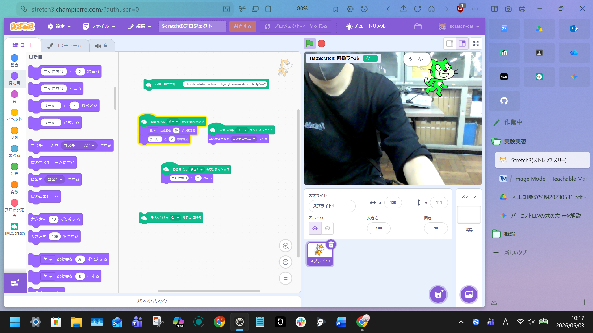
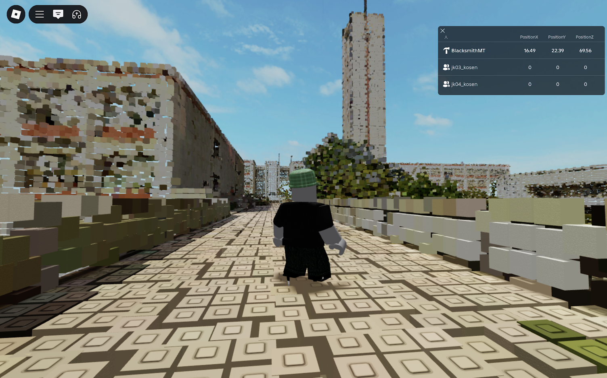

第2週目
2-1 2週目のレポートをHTMLで作る
1.内容
改行方法と前回のエラーの治し方・各レポートへのリンクを動作させる方法を理解した。改行は＜BR＞を半角小文字英語で入力すると行え、エラーは編集モードに入り適当な場所にスペースを入力してcommit changesを押すと解決できる。また、レポートはリンクが切れていて、前回４０４エラーが出たが、今回で自分のIDに変更したので解決した。 2.感想
プログラムには、凡ミスやスペルミスが加わって失敗することがあるため二重以上の確認が必須だと分かった。また、画像を所定の名前と形式に合わせていないと画像が表示されないため、こちらも確認を二重に行った。
3. 2週目が完成した人は1週目のレポートも完成させる
改行方法と前回のエラーの治し方・各レポートへのリンクを動作させる方法を理解した。改行は＜BR＞を半角小文字英語で入力すると行え、エラーは編集モードに入り適当な場所にスペースを入力してcommit changesを押すと解決できる。また、レポートはリンクが切れていて、前回４０４エラーが出たが、今回で自分のIDに変更したので解決した。 2.感想
プログラムには、凡ミスやスペルミスが加わって失敗することがあるため二重以上の確認が必須だと分かった。また、画像を所定の名前と形式に合わせていないと画像が表示されないため、こちらも確認を二重に行った。
3. 2週目が完成した人は1週目のレポートも完成させる
2-2 機械学習体験

1.内容
https://teachablemachine.withgoogle.comを使用して、機械学習を体験する。自分の手の画像を撮影してグループ分けを行い、機械学習を体験した。また、その学習させたモデルへのリンクを使ってStretch3上の拡張機能と組み合わせてプログラミングした。 2.感想
今回実践して体験する中で難しくて工夫が必要だと感じたことは、機械学習にも誤差やずれシビアな画像設定が存在するため、どうしたらどの環境でも動作させられるのかを考え、実践に移すことだ。
https://teachablemachine.withgoogle.comを使用して、機械学習を体験する。自分の手の画像を撮影してグループ分けを行い、機械学習を体験した。また、その学習させたモデルへのリンクを使ってStretch3上の拡張機能と組み合わせてプログラミングした。 2.感想
今回実践して体験する中で難しくて工夫が必要だと感じたことは、機械学習にも誤差やずれシビアな画像設定が存在するため、どうしたらどの環境でも動作させられるのかを考え、実践に移すことだ。
2-3 VR体験：RobloxとインタラクティブなWebVR


1.内容
ROBLOX上でのVR体験と、WEB VRの体験を行い、VR上での挙動について学ぶ。また、VR機器には様々なキーが割り当てできるため自分でもカスタムできる。体が動いていないのに目の前が動くことに寄って酔うことがあるので気を付ける
2.感想
二年生で実際に、プログラムを組んでステージや構造物ギミックを作ると聞いて興味がわいた。しかし、バグの修正や一つのミスで全体が壊れると心が折れると思うので、趣味の範囲で進めてみる。
ROBLOX上でのVR体験と、WEB VRの体験を行い、VR上での挙動について学ぶ。また、VR機器には様々なキーが割り当てできるため自分でもカスタムできる。体が動いていないのに目の前が動くことに寄って酔うことがあるので気を付ける
2.感想
二年生で実際に、プログラムを組んでステージや構造物ギミックを作ると聞いて興味がわいた。しかし、バグの修正や一つのミスで全体が壊れると心が折れると思うので、趣味の範囲で進めてみる。